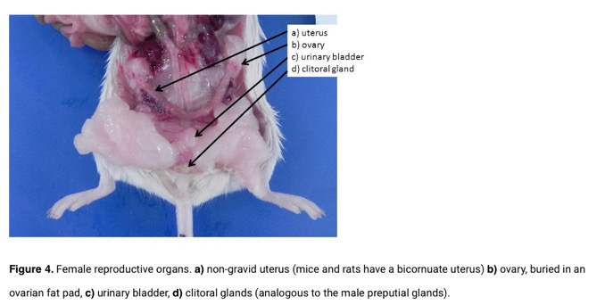
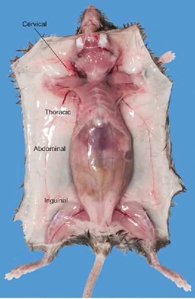
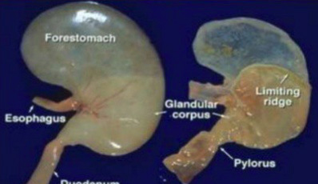
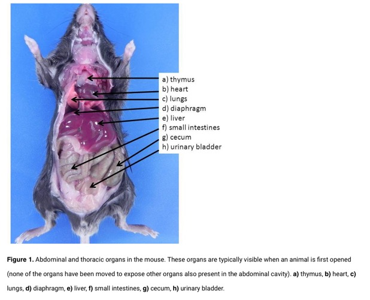
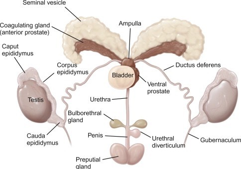

Rat and Mouse Anatomy
Rat Prosection
Evaluate the gastrointestinal tract and compare with the other species -- the rat is an omnivore with a GI tract reflecting this dietary flexibility. The stomach is divided into two compartments by the limiting ridge (margo plicatus): a non-glandular forestomach (pars proventricularis) and a glandular stomach (pars glandularis). The non-glandular portion is lined with keratinized squamous epithelium and serves as a storage compartment, while the glandular portion contains gastric glands for enzymatic digestion. The cecum is large and well-developed, reflecting the capacity for hindgut fermentation.
Important: Rats (and mice) cannot vomit due to the anatomy of the limiting ridge, the relative strength of the crural sling of the diaphragm, and the lack of a brainstem emetic reflex. This has clinical implications for anesthetic protocols and toxin ingestion.
 Rat stomach showing the limiting ridge (margo plicatus) that divides the non-glandular forestomach from the glandular stomach. The limiting ridge is the prominent mucosal fold separating the two compartments.
Evaluate the oral cavity -- note the prominent diastema between the incisors and molars (no canine or premolar teeth in rats). The dental formula is 1/1, 0/0, 0/0, 3/3 = 16 teeth. The incisors are open-rooted (aradicular hypsodont) and grow continuously, while the molars are rooted (anelodont) and do not grow continuously. Note the infolding of the lips into the diastema, which separates the oral cavity into an anterior and posterior compartment. This prevents ingestion of non-food material while gnawing.
Evaluate the harderian gland -- located behind the eye, this gland produces porphyrin-rich secretions (red-brown pigment). Excessive porphyrin secretion (chromodacryorrhea or "red tears") is a sign of stress, illness, or pain. It is distributed over the fur during grooming and can be mistaken for blood.
Evaluate the male reproductive tract -- the rat has large, prominent testes relative to body size. The inguinal canals remain open throughout life (open inguinal rings), allowing the testes to move freely between the scrotal and abdominal positions. As with the guinea pig, the open inguinal rings must be closed during castration.
Male accessory sex organs include the seminal vesicles (very large, paired, coiled tubular glands), coagulating glands (anterior prostate), ventral prostate, dorsolateral prostate, and bulbourethral glands. The seminal vesicles and coagulating glands produce secretions that form a copulatory plug in the female vagina after mating. The preputial glands produce pheromones and can become impacted or develop abscesses. The os penis is present.
Evaluate the female reproductive tract -- the rat has a duplex uterus with two completely separate uterine horns, each with its own cervix opening into a common vagina. The ovaries are enclosed within an ovarian bursa. Mammary tissue is extensive and distributed widely across the body.
 Figure 4. Rat female reproductive organs showing the duplex uterus with two uterine horns and associated structures.
- Evaluate the mammary gland distribution -- mammary tissue in the rat is extensive, extending from the cervical region (near the salivary glands) to the inguinal region. There are typically 6 pairs of mammary glands: 3 thoracic (cervical, thoracic cranial, thoracic caudal) and 3 abdominal/inguinal (abdominal cranial, abdominal caudal, inguinal). Mammary tumors are among the most common neoplasms in rats, particularly in females. Fibroadenomas are the most common type in rats and are often benign, but can grow very large.
 Diagram showing the distribution of mammary tissue in the rat. Note the extensive area of mammary tissue extending from the cervical to the inguinal region.
 Mammary gland distribution in the rat shown on a dark background, highlighting the widespread nature of the mammary tissue across the ventral body wall.
- Evaluate the thoracic and abdominal organs -- note the thymus, which persists into adulthood in the rat (unlike many other species). The spleen is a long, flat, tongue-shaped organ.
Mouse Anatomy
The mouse shares many anatomical features with the rat. The following images illustrate key features of mouse anatomy for comparison.
 Figure 1. Mouse abdominal and thoracic organs in situ. Note the similar organ arrangement to the rat but at a smaller scale.
Figure 1. Mouse abdominal and thoracic organs in situ. Note the similar organ arrangement to the rat but at a smaller scale.
Mouse Male Reproductive System
 Diagram of the mouse male reproductive system showing the testes, epididymis, vas deferens, seminal vesicles, coagulating glands, prostate, and bulbourethral glands. The anatomy is similar to the rat with large seminal vesicles and open inguinal canals.
References: Quesenberry KE, Mans C, Orcutt C, Carpenter JW. Ferrets, Rabbits, and Rodents: Clinical Medicine and Surgery. 4th ed. St. Louis: Elsevier; 2021. Percy DH, Barthold SW. Pathology of Laboratory Rodents and Rabbits. 4th ed. Ames: Wiley-Blackwell; 2016.